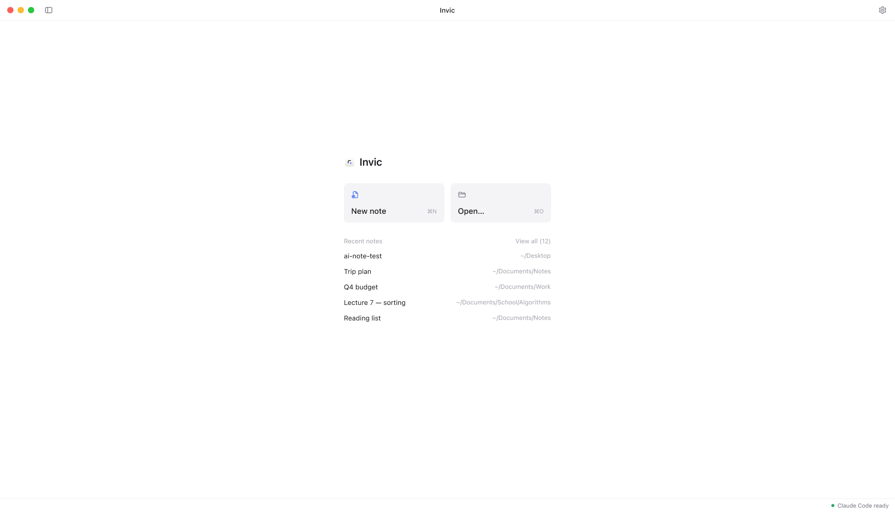
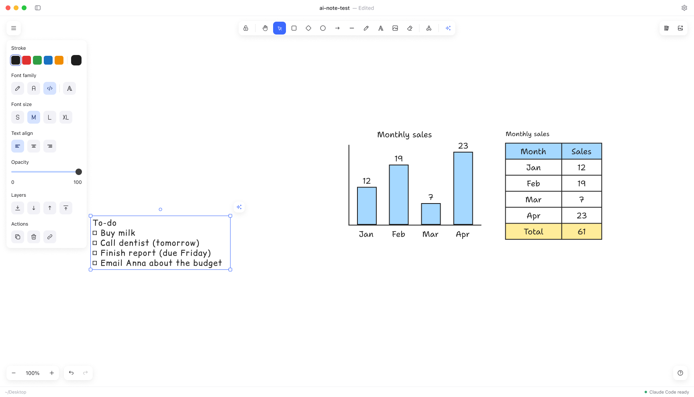
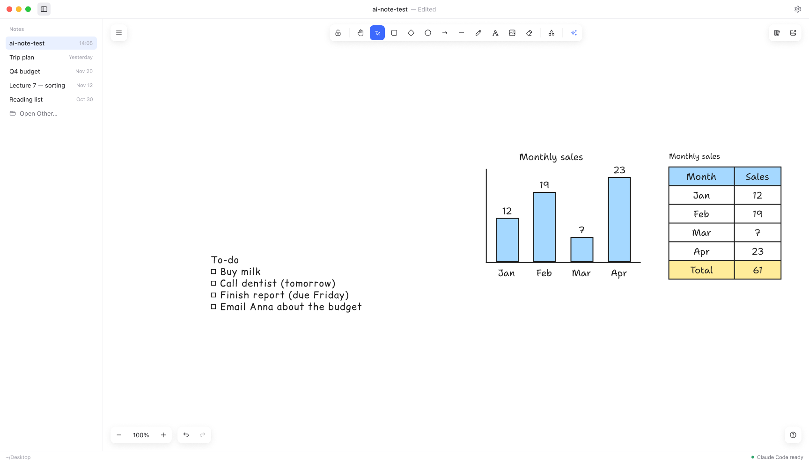
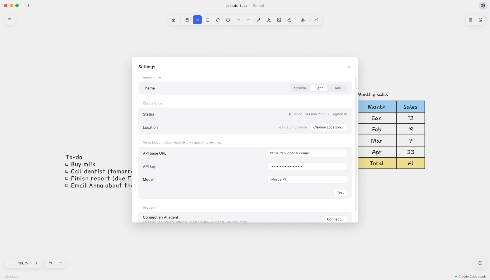
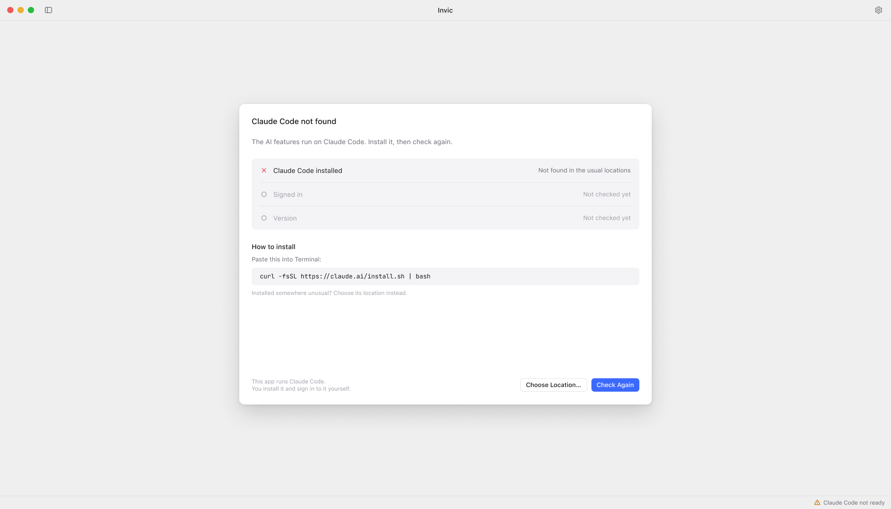

AI 筆記 App 架構
一個 Mac 桌面 App：畫板照常用，把內容選取起來按 AI 按鈕，AI 直接在畫布上幫你改或在旁邊加東西。
後端的細節（模組、請求格式、記憶、設定）在後端架構。資料更新日 2026-11-28。舊方向（iPad、獨立伺服器）的頁面在 archive/ 裡：iPad App 架構、後端架構。點圖上的方塊可以跳到它的說明。
整體
使用者只開一個 App。AI 透過畫布的 MCP 工具直接動畫布。
Web page (React)
網頁（React + Excalidraw），畫布已經有，要加 AI 按鈕和輸入框。畫布以外的畫面（首頁、側欄、標題列、狀態列、設定、啟動檢查）也會做在這裡，和畫布在同一個 WKWebView。
Swift shell
Mac App 的外殼，已經有。打開 App 時啟動伺服器並給它一組隨機 token，關掉時停掉它。送請求給伺服器和錄音也由它做。之後只留薄薄一層：視窗、選單、開檔存檔、啟動伺服器、錄音。
Bun server
包在 App 裡的後端，編成一個獨立程式。generate 收到使用者的話，組上規則，啟動 Agent，把同一個程式裡的畫布 MCP 工具接給它。另外負責語音轉文字。
Canvas MCP
伺服器裡的一個模組（TypeScript，計畫）。它和 App 保持一條 socket 連線，讓 AI 讀畫布、放新東西、改和刪東西。取代 Claude Code 每次啟動的 Swift excalidraw-mcp。
Claude Code
使用者自己裝、自己登入的程式。伺服器透過 Agent SDK 啟動它；使用者平常的設定、skills、其他 MCP 都不載入。
Claude models
用量算在使用者自己的 Claude 訂閱上。
STT API
語音轉文字。訂閱不包含，要另外的金鑰（OpenAI 相容格式）。
.excalidraw，可以拿去別的地方用）和我們的記憶檔。按 ⌘S 才存。Agent SDK 怎麼連到 Claude
Agent SDK 是一小段函式庫，它會啟動 Claude Code 程式，真正和模型溝通的是那個程式。
Our server
我們的後端，呼叫 Agent SDK。
Agent SDK
函式庫，很小；版本固定，不自動跟著升。
Claude Code program
就是 Claude Code 的 CLI；SDK 0.3.N 對應 Claude Code 2.1.N。
Claude models
用量算在使用者自己的 Claude 訂閱上。
A: packed in our app
沒採用：App 會多約 384 MB，而且要發布 Anthropic 的程式。
B: already on the Mac
採用：用 pathToClaudeCodeExecutable 指向使用者已裝好的那一份。
版本不一致的保險
| 做法 | 處理什麼 |
|---|---|
| App 啟動時檢查 Claude Code 版本 | 比最低要求舊就請使用者更新，AI 功能先不開 |
| SDK 版本固定 | 測過哪一版就用哪一版 |
| 每次請求開始時檢查 Agent 實際拿到的工具清單 | 出現我們以外的工具就停下，不送出 |
| 用到的選項全部明確寫出來 | 預設值會隨版本變 |
| 找不到 Claude Code | 顯示安裝說明，讓使用者在設定裡指定位置 |
用訂閱額度的規定
截至 2026-11-26，Anthropic 的官方說明寫：第三方 App 的用量仍從使用者的訂閱額度扣。這條規定今年改過多次。
| 做法 | 官方文件 |
|---|---|
| App 跑沒被修改的 Claude Code，使用者用 Claude Code 自己的登入流程登入，用量算在自己的訂閱上 | 可以（我們的做法） |
| App 自己做「用 Claude 登入」的畫面 | 不可以 |
| App 收集或保存使用者的登入憑證 | 不可以 |
| App 代替使用者付錢，或把請求集中到某個人的訂閱 | 不可以 |
generate 模組的一個地方。一次 AI 請求
選取、按 AI 按鈕、說要什麼，AI 就直接動手。
1 Select, press AI
和一般畫板一樣選取內容，旁邊出現 AI 按鈕。按下去打字或用講的；也可以直接說要放在哪裡。
2 Shell sends it
Swift 外殼把這句話送給包在 App 裡的伺服器。
3 Agent starts
伺服器接續這份筆記的對話，只給 Agent 畫布的 MCP 工具；先檢查它實際拿到的工具清單，不對就停下。
4 Agent looks
AI 用 get_scene 看畫布上有什麼、在哪裡、你選了什麼。請求裡已經附了按下去那一刻的截圖；改完想檢查時再用 render_image 看畫面。
5 Agent edits
AI 用 add_elements、update_elements、delete_elements、add_mermaid 放和改。全部做完才一次放上畫布；失敗或取消就什麼都不放；成功的話整次修改是一個 ⌘Z（2026-11-28 決定，第 5 部分實驗後才知道做法行不行）。等待時畫面顯示載入動畫。
6 Record in memory
這次請求的對話存進這份筆記的資料夾。下次請求接續它，所以 AI 記得做過什麼，可以叫它把東西還回來。
AI 怎麼決定
| 你說的話 | AI 做什麼 |
|---|---|
| 「幫我整理清楚一點」「格式化一下」 | 直接改掉選取的內容，放在原位 |
| 「幫我做一張圖表」「在旁邊做一個表格」 | 原本的不動，在旁邊加新的 |
| 「放在右邊」「移到下面」 | 照你說的位置放 |
| 沒說清楚 | 放在旁邊，不動原本的內容 |
端點
| 端點 | 送出 | 回來 |
|---|---|---|
POST /generate | 使用者的話、選了什麼、一張截圖 | 完成或失敗 |
POST /transcribe | 音檔 | 文字（聽寫：文字先放回輸入框，確認後才送出；音檔轉完就丟） |
clear_canvas（清空畫布）。~/Library/Application Support/ 底下 App 自己的資料夾，一天一個檔，留 30 天。AI 做出來的東西
AI 的結果就是畫布上的一般圖形和文字，和你自己畫的沒有差別。
| 結果 | 在畫布上大概是什麼（沒有規定畫法） |
|---|---|
| 表格 | AI 用方塊、線和文字拼出來，樣子由 AI 決定 |
| 步驟、摘要 | 文字 |
| 心智圖、流程圖 | 方塊加箭頭（用已有的 add_mermaid） |
| 圖表 | AI 用方塊和文字拼出來（例如長條圖），樣子由 AI 決定 |
畫面
只有一個視窗，所有事都在裡面做。上下兩條固定的細條，中間換內容；設定和檢查是浮在中間的面板。
Title bar
最上面的細條。左邊是視窗的三個圓點和側欄開關，中間是標題，右邊是設定齒輪。例：「Plan — Edited」。
Main area (Home / Canvas)
中間的大區塊。沒開筆記時是首頁：新增（⌘N）、打開（⌘O）和最近的筆記；開了筆記就是畫布，多了 AI 按鈕。
Status bar
最下面的細條。右邊顯示 Claude Code 能不能用；在畫布上，左邊顯示筆記的資料夾。例：「Claude Code ready」。
Sidebar
平常收起來。按開關後從左邊推出一條窄清單，只有最近的筆記和「Open Other…」。一次只開一份筆記，從這裡切換。
Dialog
浮在視窗中間的面板，後面變暗。按齒輪打開設定；Claude Code 有問題時，啟動就出現檢查面板。










web/ 裡，和畫布在同一個 WKWebView；取代 AppKit 寫的首頁和設定視窗（StartWindowController、SettingsWindowController，React 版做好後拿掉）。一套 CSS，整個 App 一種樣式；雲端的 agent 也能在 headless Chromium 裡打開畫面和 Figma 比對。畫面要的資料（最近的筆記、設定、Claude Code 狀態）全部經過外殼，用網頁和外殼之間已經有的訊息管道；網頁不直接連伺服器。#3C69FD；icon 本身是 #3D6BFF，介面的藍深一點點，白字的對比才夠），存成 Figma 變數。只畫了淺色。已經決定
- Mac 桌面 App，以 excalidraw-mac 為基礎，程式搬進這個 repo 改。只支援 Apple 晶片。
- 外殼留 Swift，不 fork 官方 Excalidraw，不換 Electrobun（2026-11-28，原因見「讀原始碼和資料查到的」）。畫布繼續用
@excalidraw/excalidraw套件。 - 畫布以外的畫面全部用 React 做在
web/，和畫布同一個 WKWebView；Swift 只留視窗、選單、開檔存檔、啟動伺服器、錄音。 - 畫布用 Excalidraw，用法和一般畫板一樣。
- 叫 AI 的方式：App 上固定有一個 AI 按鈕，按下去打字或語音。先選了東西，AI 就知道你指的是那幾個；沒選就是直接下指令。
- AI 用畫布的 MCP 工具在畫布上放和改，全部做完才一次放上去（見下面 2026-11-28 那一條）；結果是一般圖形和文字，畫法不規定。
- 畫布的 MCP 改用 TypeScript 寫在伺服器裡：伺服器和 App 的 socket 保持一條連線，在同一個程式裡把工具交給 Agent SDK。
- AI 自己判斷要改掉原本的還是放旁邊；使用者也可以直接說放哪。
- 範圍靠提示詞，不加程式限制；不提供「清空畫布」。
- 一份筆記是一個一般資料夾：標準的畫布檔加上記憶檔。
- 記憶用 Agent SDK 內建的對話紀錄，透過轉接器存在筆記的資料夾裡；每次請求接續這段對話。壓縮交給 SDK 自動做；壓縮後記憶轉接器把摘要之前的內容從檔案拿掉（還沒實測）。
- AI 可以照記憶把東西還回來。
- 語音輸入一開始就做，用 OpenAI 相容格式的 STT API 和使用者自己的金鑰。
- 先不做深色的樣式（2026-11-28）。
- 記憶檔只放 AI 下次會讀到的內容，不是流水紀錄：對話被壓縮成摘要後，摘要之前的舊內容從檔案拿掉。不另外設保留期限（2026-11-28；SDK 允不允許這樣改還沒實測）。
- React 的畫面要的資料（最近的筆記、設定、Claude Code 狀態）全部經過 Swift 外殼，用網頁和外殼之間已經有的訊息管道；網頁不直接連伺服器（2026-11-28）。
- AI 的修改全部做完才一次放上畫布：處理中只有載入動畫；失敗或取消就整份丟掉，畫布不變；成功的話整次修改按一次 ⌘Z 就退回（2026-11-28，做法還沒實驗）。
- 一份筆記的資料夾裡只有一個畫布檔和一個記憶檔。打開時缺畫布檔就補一個空白的；缺記憶檔就從空白的記憶開始，AI 只是不記得以前的事（2026-11-28）。
- 不做「撤回這次 AI 的修改」的按鈕；用 ⌘Z 和「叫 AI 還回來」（2026-11-28）。
- 不加專用的「畫表格」工具；表格排得好不好看不特別處理（2026-11-28）。
- Swift 的
excalidraw-mcp不留給 App 外面的 agent：TypeScript 版做好後就拿掉（2026-11-28）。 - 授權簡單處理：把 Agent SDK 列進第三方授權清單，不另外查證（2026-11-28）。
- AI 處理時不鎖畫布，只暫時鎖住交給 AI 的那幾個東西；位置被擋住就自動挪開。
- 後端是 Bun 伺服器 + Claude Agent SDK，包在 App 裡。
- Claude Code 用使用者已裝好的那一份；不載入使用者的設定。
- 啟動時檢查版本，每次請求檢查工具清單。
- 不逐字串流；等待時顯示載入動畫。
- 由 Swift 外殼連伺服器、錄音。
- 不自動重試；斷線就停。
- Log 放在 App 自己的資料夾，一天一個檔，留 30 天。
- 只有一個視窗：上面標題列、中間主畫面（首頁或畫布）、下面狀態列。
- 側欄平常收起來，打開只有最近的筆記；一次只開一份筆記。
- 設定和啟動檢查是視窗中間的面板：一樣大、留白一樣、放不下就上下捲。
- 外觀設定套用到整個 App，不只畫布。
- 拿掉右下角的「AI agent connected」。
web/用 Bun 安裝（bun.lock）；build 和測試仍用 Node 跑，PATH 上要有 Node（^20.19 或 ≥22.12）。- 過時的文件放 docs/archive/。
暫定和還沒決定
- Agent 用哪個 Claude 模型。
- 介面的主色要不要改成和 icon 完全一樣的
#3D6BFF（現在是#3C69FD）。 - 「先改草稿、做完一次套到畫布」行不行得通：第 5 部分實驗。
- 拿掉摘要之前的內容後，SDK 還能不能正常接續記憶檔：做記憶之前先試。
實測過的
AI 在畫布上畫東西（Agent SDK 接上畫布的 MCP，2026-11-27）
| 說的話 | 結果 |
|---|---|
| 「做一張長條圖，放右邊」 | 成功。圖表在右邊，比例正確，原本的數字沒動。讀一次畫布、放一次東西，21 秒 |
| 「把這個弄清楚一點」 | 成功。原地改成四行的待辦清單 |
| 「變成表格，加總計列，放在待辦下面」 | 表格整齊，總計正確。但 AI 把原本那段數字刪掉了：它把「變成」理解成取代 |
| AI 拿到的工具 | 只有我們給的六個 |
畫布 MCP 放進伺服器（TypeScript，macOS，2026-11-28）
| 項目 | 結果 |
|---|---|
伺服器直接連 App 的 socket，用 SDK 的 createSdkMcpServer 給工具 | 成功。Claude 在真的 Invic 上畫了圖並讀回來，回傳圖片也可以（實驗程式） |
| 工具清單的行為 | 和 Swift 版一樣 |
記憶（對話紀錄存在筆記資料夾裡，2026-11-27）
| 項目 | 結果 |
|---|---|
| 第一次請求：「把下面的表格刪掉」 | 成功。對話紀錄寫進資料夾裡的檔案，15 秒 |
| 換一個新的程式，接續對話：「把你剛才刪掉的放回來，改放在圖表右邊」 | 成功。AI 記得刪了什麼，重新畫了一份放在圖表右邊，內容和顏色一樣。38 秒 |
| 還回來的是不是原本那一份 | 不是。AI 自己說明：是照記憶重畫的，細節可能有一點不同 |
| 記憶檔大小 | 第一次請求後 383 KB，第二次後 493 KB。大部分是 SDK 附帶的資料，不是對話本身 |
| 本機另外留的副本 | 有，在 ~/.claude/projects/ 底下，和文件說的一樣 |
其他
| 項目 | 結果 |
|---|---|
| 把伺服器骨架編成獨立程式 | 成功，61 MB；編出來的簽章無效，要重新簽章才跑得起來 |
| Agent SDK + 已裝的 Claude Code（版本一致） | 成功，用訂閱登入，不需 API 金鑰；約 9 秒 |
| Agent SDK 編成獨立程式（63 MB）+ 已裝的 Claude Code | 成功，約 11 秒 |
| 圖片輸入 | 成功，正確讀出圖上的字，約 5 秒 |
| SDK 比 Claude Code 新（0.3.332 + 2.1.200） | 成功，工具清單正常，約 5 秒 |
| SDK 比 Claude Code 舊（0.3.200 + 2.1.332） | 能跑，但 Agent 多看到使用者帳號上的其他連接器；所以要檢查工具清單 |
| 從 Mac App 的環境找 Claude Code | App 拿到的搜尋路徑很短，直接找找不到。做法：先看幾個常見位置，再問使用者的登入 shell，兩種都試過找得到 |
| 上層程式被強制關掉時，伺服器會不會自己結束 | 會。伺服器發現輸入管道關閉就結束。用 Bun 當上層測的，還沒用 Swift 外殼測 |
| 用戶端斷線時 Bun 會不會通知伺服器（Bun 1.4.0） | 會，約 1 秒內 |
讀原始碼和資料查到的
| 項目 | 結果 |
|---|---|
| 在 WebKit 裡錄音 | 有風險。頁面不是從 https 載入時，錄音功能可能不存在或卡住不回應（WebKit 回報）。做法：改由 Swift 外殼錄音 |
| Electrobun v2.0.7 能不能取代 Swift 外殼 | 不行。缺存檔對話框、系統的最近檔案、網頁當掉的偵測、alert/confirm、全螢幕事件、深淺色 API、資料夾型文件；麥克風、簽章後叫起 Claude Code、Agent SDK 跑在它的工作執行緒，從文件無法確定；只有一個維護者，v2 才三個月。只讀了文件和原始碼，沒有實際跑 |
| 把多個步驟合成一次復原 | Excalidraw 有「晚點一起記」的模式（原始碼）。讀說明知道的，沒有實際跑過。使用者同時在編輯時會被打亂，所以沒有採用。2026-11-28 改定：整次 AI 修改是一個 ⌘Z，做法是 AI 先改一份草稿，做完用一次 updateScene 套到畫布（還沒試，第 5 部分實驗） |
授權要遵守的事
- App 的名字、標誌不能用「Claude Code」或 Anthropic 的名稱；可以用文字說明「這個 App 會執行 Claude Code」。
- 不修改 Claude Code 程式，也不關掉它內建的登入方式。我們用的是使用者自己裝的那一份，本來就沒有動它。
- 每個使用者用自己的登入或金鑰，App 不代付、不轉賣、不把請求集中到某個人的帳號。
- App 不做自己的「用 Claude 登入」畫面，不收集或保存登入憑證。
- Agent SDK 不是開源授權。這個 repo 不放它的原始碼，只用套件的方式引用。
- 文件沒有明寫的一點：把 Agent SDK 函式庫編進發布的 App 裡。官方說明寫 SDK 可以用來做「提供給自己使用者的產品」，但沒有寫明重新發布。要完全確定只能問 Anthropic。這不影響程式運作。
還沒查證
- 對話很長、被 SDK 自動壓縮之後，AI 還記得多少、還能不能把很久以前刪掉的東西還回來。
- 只鎖住交給 AI 的東西、位置被擋住就挪開。
- 真的在畫布上選取後再叫 AI（實驗時是用文字告訴 AI 選了什麼）。
- 更多種請求下，AI 畫得好不好、「改掉還是放旁邊」判斷得準不準（目前只試了三次）。
- 伺服器由 Swift 外殼啟動和關閉（目前只用 Bun 模擬過）。
- Swift 外殼錄音再交給伺服器。
- 加上伺服器後 App 的實際大小（估計約 90 MB）。